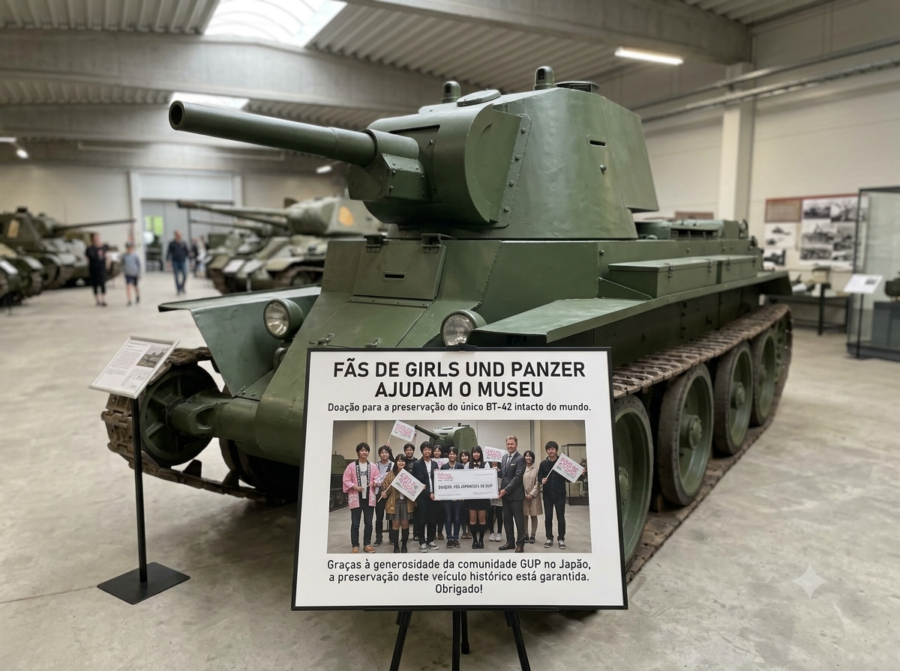

Uma impressionante mobilização de entusiastas do anime *Girls und Panzer* resultou em uma grande vitória para a preservação histórica militar. Fãs japoneses e internacionais se uniram em uma campanha de financiamento coletivo para apoiar o Museu de Tanques de Parola, na Finlândia. O objetivo principal da arrecadação foi garantir a manutenção e restauração do lendário tanque BT-42, um modelo icônico que ganhou enorme popularidade global após sua aparição heroica do filme animado da franquia.

O veículo em questão é a única unidade remanescente e intacta do BT-42 no mundo, tornando-se uma relíquia de valor inestimável para historiadores. Diante de dificuldades financeiras agravadas nos últimos anos, o museu finlandês corria riscos de não conseguir arcar com os custos de conservação da blindagem e da estrutura mecânica do tanque. Ao descobrirem a situação, os líderes da comunidade otaku organizaram a campanha que rapidamente superou as metas iniciais.
A administração do museu expressou profunda gratidão pelo apoio inesperado vindo da comunidade de anime, destacando que a cultura pop se tornou uma ponte crucial para salvar o patrimônio real. Graças aos fundos recebidos, o BT-42 agora passará por reformas estruturais completas e ganhará uma nova área de exibição protegida, garantindo que entusiastas de história e fãs da animação possam contemplar a máquina por muitas gerações.